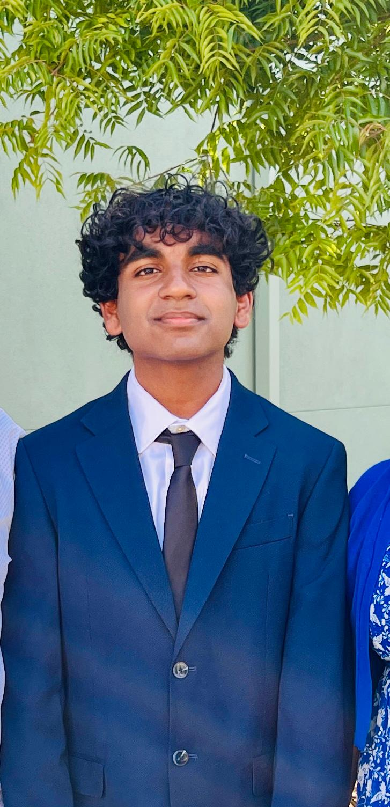

My name is Raghuveer Marada and throughout my fifteen years of living, the idea of what I want to be when I grow up along with what my goals are have been developing. A goal in mind that I am interested in achieving is earning the job title of "Distinguishd Engineer", similar to my father. In order to achieve this goal, I will have to follow the path of my father, I will first need to attend a good university, and then work at a company for many years and demonstrate my skills. After that, I will be able to earn my title as "Distinguished Engineer". This is my career path because I have had expierience with programming ever since I was in elementary school and I find it satisfactory. In addition, I would like a high-paying job in order to keep living in the Bay Area.
As stated previously, I have a vast experience in the field of Computer science, including Machine Learning, Python, Raspberry Pi, web development, and more. Along with these experiences I also possess leadership qualities and a perseverant attitude which I have demonstrated in my officer positions in school clubs.
I have many important achievements, in the Alemeda County Science and Engineering Fair, I've scored fourth place two times and third place one time showing my proficiency in applying my Raspberry Pi skills along with my knowledge using Artificial Intelligence in real life scenarios to help advance technology. Outside of engineering, I'm the Field Conducting Drum Major for Emerald Highschool and I'm the first chair alto saxophone in the Honors Wind/Jazz Ensemble class. Additionally, I qualified the national geography bee after winning the regional geography bee.
I have a vast experience in working for my schools, in junior highschool, I was the president of the Cottonwood Creek School Music Association. Now I am the Secretary of the Emerald Highschool Music Club. In addition, in my seventh grade year, I was in the leadership class for my school. Along with all of this, I've been on my junior highschool's track team. This is only a fraction of my work expierience however I would like the point out that I've learnt many lifeskills, such as how to lead a group of people, how to motion a club meeting, and how to manage my time wisely.
Overall, I have a lot of experience with engineering. I would like to thank you for taking your time and reading this, feel free to explore the rest of this site. Thank you!
